ICML 2026
RoboFlow4D
A lightweight flow world model predicts 3D motion to guide real-time robotic manipulation.
PHYSICAL INTELLIGENCE & ROBOTICS
We bring together perception, prediction and action to help robots understand and interact with the physical world.
OUR COMMUNITY
Research collaborations and support across our community, including research exchanges with ETH Zürich and UC Berkeley.
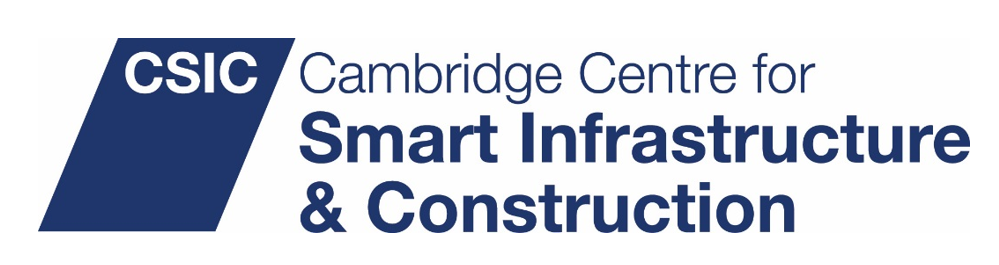
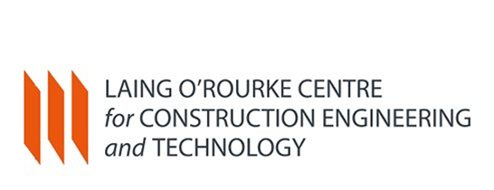
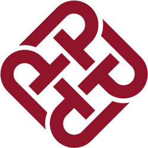
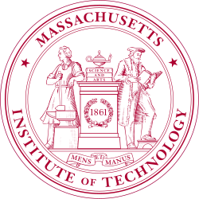
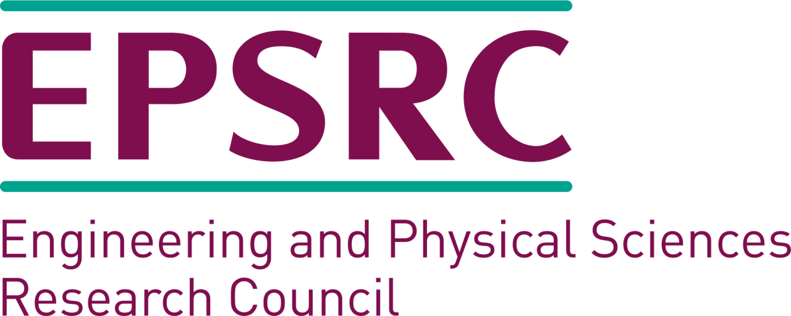
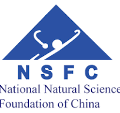
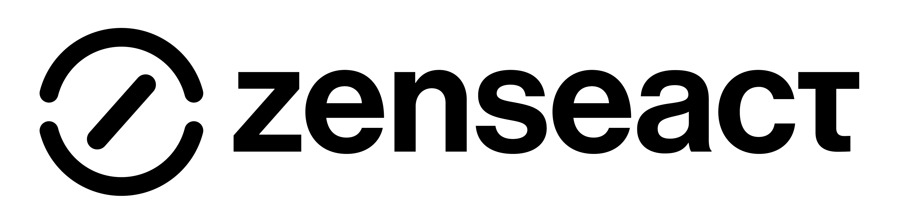
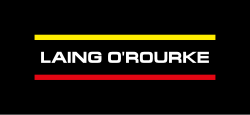
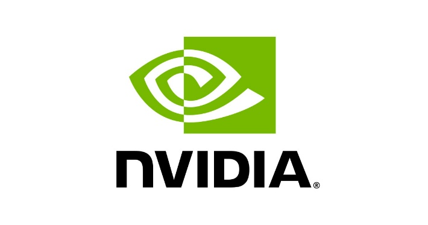
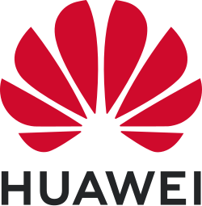
Research in motion
A lightweight flow world model predicts 3D motion to guide real-time robotic manipulation.

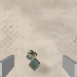
Gaussian splatting connects simulation and reality to support robot manipulation learning.
OUR COMMUNITY
Generalisable Robotic AI for Construction Environments, with collaborators at Oxford and UCL.
Digital twins for trustworthy physical AI and embodied intelligence.
From smart construction to physical AI. Date to be confirmed.
Visual intelligence for built environment digital twins.
Real-sim-real learning for home robots, a challenge proposal with SJTU and Agibot.
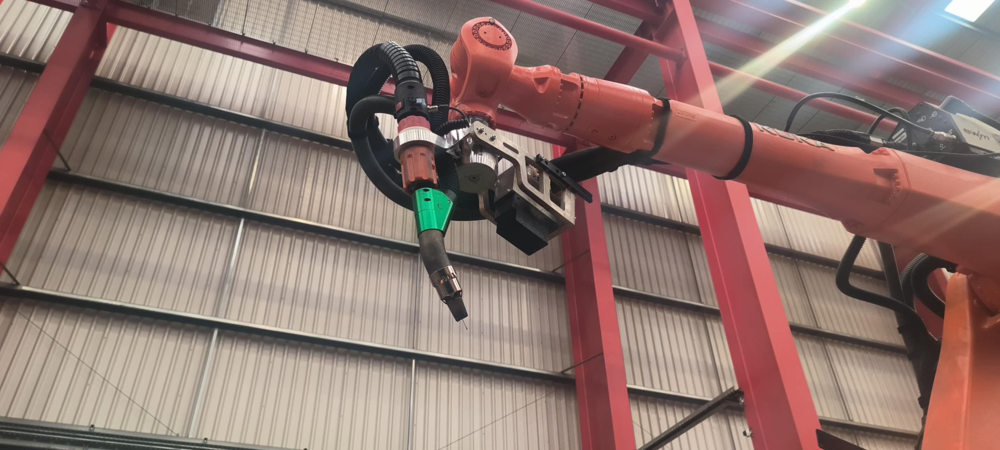
INDUSTRY APPLICATION
Robotics for mobility, manipulation and construction.
Explore applicationsOUR GROUPS
 CambridgeRobotics Group↗
CambridgeRobotics Group↗JOIN THE LAB
Build the next generation of physical intelligence with us.
Explore opportunities